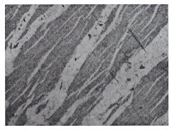
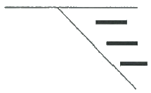
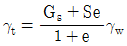
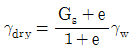
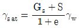
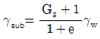
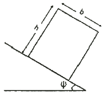

응용지질기사 (2015-03-08 기출문제)
1과목: 암석학 및 광물학
1. 다음 중 편암에 대한 설명으로 옳지 않은 것은?
- 육안으로는 결정이 구분이 되지 않는다.
- 엽리구조는 편마암보다 나란하고 더 얇다.
- 편리에 따라 비교적 잘 쪼개진다.
- 셰일이 광역변성작용을 받아 생성된다.
(정답률: 86%)

2. 다음 중 이질암에서 기원된 녹색 편암상의 광물 조합에 포함되지 않는 것은?
- 녹니석
- 석류석
- 조장석
- 백운모
(정답률: 54%)
3. 냉각되어 안산암을 이루는 중성마그마가 생성되는 방법으로 적당하지 않은 것은?
- 마그마 분화작용
- 동화작용
- 마그마의 혼합
- 마그마의 급냉
(정답률: 76%)
4. 비교적 얕은 곳에서 잔물결이나 유동하는 물의 작용이 퇴적물 표면에 미쳐서 나타나는 파상(波狀)의 자국이 지층 중에 그대로 보존되어 있는 구조는?
- 연흔(ripple mark)
- 사층리(cross-bedding)
- 건열(mud-mark)
- 결핵체(concretion)
(정답률: 87%)
5. 다음 중 화학적 풍화작용에 해당하지 않는 것은?
- 용해작용
- 산화작용
- 동결작용
- 수화작용
(정답률: 89%)
6. 다음 중 엽리가 발달되어 있지 않고 치밀하고 단단한 조직을 보여주는 변성암은?
- 압쇄암
- 혼펠스
- 점판암
- 편마암
(정답률: 74%)
7. 주로 조회장석(labradorite)과 휘석(pyroxene)으로 구성된 관입화성암으로서 오피틱(ophitic)조직을 갖는 특징이 있는 암석은?
- 사문암
- 휘록암
- 섬록반암
- 섬장반암
(정답률: 78%)
8. 하천과 호수가 많이 발달한 지역에 주로 생성되는 퇴적암이 아닌 것은?
- 사암
- 역암
- 이암
- 표석점토암
(정답률: 79%)
9. 화성암이 염기성암에서 산성암으로 이동함에 따른 설명으로 옳지 않은 것은?
- Na2O + K2O의 함유량 증가
- CaO + FeO의 함유량 감소
- 유색광물의 함유량 증가
- SiO2의 함유량 증가
(정답률: 73%)
10. 유출된 현무암질 용암의 표면이 먼저 고결되고 내부에 고온의 액상 용암이 들어있을 때, 위로부터 용암이 추가되면서 고결된 표부를 뚫고 내부의 용암이 전부 유출되어 생긴 것은?
- 마그마 챔버
- 화도
- 베개용암
- 용암터널
(정답률: 79%)
11. 연마한 광물의 표면에 미세한 전자선을 조사시켜 발생되는 2차 X-선스펙트럼의 파장과 강도를 분해함으로서 광물에 들어 있는 원소들을 측정하는 분석법은 무엇인가?
- 전자현미분석
- X-선형광분광분석
- 원자흡수분광분석
- 중성자회절분석
(정답률: 68%)
12. 라브라도라이트 사장석 표면에서 관찰되는 라브라도리슨스(labradorescence)효과의 원인은?
- 원자 층에서 일어나는 빛의 회절효과
- 알바이트 사장석과 경계에서 일어나는 빛의 간섭효과
- 신선한 광물표면에서 일어나는 빛의 반사효과
- 취편쌍정 경계에서 일어나는 빛의 간섭효과
(정답률: 66%)
13. 원자가 전자를 얻을 경우 생성되는 것은 무엇인가?
- 양이온
- 음이온
- 중성자
- 양성자
(정답률: 75%)
14. 반금속에 해당되지 않는 원소는?
- 탄소
- 붕소
- 규소
- 비소
(정답률: 67%)
15. 결정면 상에 조선(striation)이 발달되어 있는 특징을 흔히 관찰할 수 있는 광물은?
- 백운모
- 적철석
- 황철석
- 감람석
(정답률: 55%)
16. 광물의 인터그로스(intergrowth) 조직은 광물들이 정출되면서 함께 성장하여 만든 조직이다. 아래 그림은 용리작용에 의해 알칼리 장석 내 사장석이 정출되면서 만든 조직이다. 이러한 조직을 무엇이라 하는가?

- 문상조직(graphic texture)
- 미르메카이트 조직(mymekitic texture)
- 엽리 조직(lamella texture)
- 퍼어다이트 조직(perthitic texture)
(정답률: 83%)
17. 산소원자의 원자량은 16, 칼슘원자의 원자량은 40, 탄소원자의 원자량은 12이다. 방해석의 화학식량은?
- 68
- 100
- 104
- 112
(정답률: 73%)
18. 동일한 물질로 구성된 2개 또는 그 이상의 결정이 서로 일정한 결정학적인 관계를 가지고 결합하여 있는 것을 무엇이라고 하는가?
- 동질이상
- 고용체
- 쌍정
- 대칭
(정답률: 76%)
19. 광물이 갖는 고유의 색을 설명하는 것으로 결정장이론(crystal field theory)이 있다. 즉, 광물을 구성하는 화학원소 중 전이원소가 발색의 원인이라는 이론이다. 다음 광물 중 해당 전이원소와 고유의 색의 연결이 올바르지 않는 것은?
- 루비(강옥) - Cr3+ - 적색
- 자수정(석영) - Si4+ - 보라색
- 페리도트(감람석) - Fe2+ - 녹색
- 모거나이트(녹주석) - Mn2+ - 분홍색
(정답률: 65%)
20. 등축정계 완면상정족에 속하는 결정에서 대칭면의 수는 모두 몇 개인가? (단, 육팔면체정족임)
- 3개
- 6개
- 9개
- 12개
(정답률: 61%)
2과목: 구조지질학
21. 인도판과 유라시아판의 경계 특성으로 알맞은 것은?
- 발산 경계
- 압등 경계
- 변환단층 경계
- 충돌 경계
(정답률: 75%)
22. 화석은 과거에 살았던 동·식물의 유해나 흔적을 말한다. 다음 중 화석이 가지는 의의로서 옳지 않은 것은?
- 생물진화의 증거
- 지질시대 결정
- 지하내부구조 해석
- 고환경에 대한 추적
(정답률: 91%)
23. 화강암과 같은 등방성(isotropic) 암석이 풍화작용으로 하중이 감소될 때 생긱는 절리는?
- 주상절리(columnar joint)
- 층상절리(sheeting joint)
- 우모상절리(feather joint)
- 공액절리(conjugate joint)
(정답률: 77%)
24. 지진발생의 사전 조짐과 관련이 없는 것은?
- 급격한 기상변화
- 동물들의 기이한 행동
- 지구 자기(magnetism)의 불안정
- 미진(tiny earthquakes)의 빈번한 발생
(정답률: 79%)
25. 다음 그림은 방해석으로 충전된 인장절리(tension cracks, 짙은 실선)들이 관찰되는 수직단면도이다. 이와 같은 인장절리를 수반할 수 있는 단층의 종류는?

- 정단층
- 역단층
- 우수향 주향이동단층
- 좌수향 주향이동단층
(정답률: 45%)
26. 스테레오 넷을 이용하여 습곡구조 또는 절리의 방향성을 분석하는 방법이 아닌 것은?
- 등고선 다이어그램(contour diagram)
- 장미 다이어그램(rose diagram)
- 폴 다이어그램(pole diagram)
- 응력-변형률 다이어그램(stress-strain diagram)
(정답률: 69%)
27. 2004년 12월에 발생하여 쓰나미 등 큰 재난을 야기하였던 인도네시아 지진 발생 지역과 가장 유사한 지체구조적 특성을 갖는 곳은?
- 일본
- 히말라야 산맥
- 산 안드레아스 단층
- 중앙대서양 산맥
(정답률: 88%)
28. 지구내부 구조에서 저속도층(low velocity layer)이 위치하는 곳은?
- 암석권(lithosphere)
- 하부맨틀(lower mantle)
- 연약권(asthenosphere)
- 핵(core)
(정답률: 72%)
29. 돌리네(doline) 구조가 발달할 수 있는 지층이 아닌 것은?
- 풍촌층
- 함백산층
- 막동층
- 두위봉층
(정답률: 72%)
30. 지진파에 대한 설명으로 옳지 않은 것은?
- S파는 형태의 일시적인 변화를 주변서 매질을 이동하는 실체파이다.
- P파는 진행방향에 수직방향으로 매질의 입자를 진동시키면서 이동한다.
- 표면파는 P파나 S파에 비해 속도가 느리다.
- S파는 액체 및 기체를 통과하지 못한다.
(정답률: 83%)
31. 대륙지각의 평균 밀도가 2.5g/cm3일 때 대륙지각 하부인 30km 깊이에서의 정암압(lithostatic pressure)은? (단, 중력가속도 g = 9.8m/sec2 임)
- 73.5MPa
- 735MPa
- 76.5MPa
- 765MPa
(정답률: 76%)
32. 대륙지각과 해양지각에 대한 설명으로 옳지 않은 것은?
- 대륙지각의 평균 두께는 해양지각보다 두껍다.
- 해양지각은 주로 현무암으로 구성되어 있다.
- 대륙지각은 해양지각과 비교하여 상대적으로 균질한 화학조성을 갖는다.
- 해양지각의 평균밀도는 대륙지각보다 크다.
(정답률: 77%)
33. 부딘구조(boudins structure) 또는 팽창구조(pinch and swell structure)로 알 수 있는 정보는?
- 습곡축의 대체적인 방향과 경사
- 지층의 정상과 역적
- 습곡작용 횟수
- 지층의 물리적 성질
(정답률: 77%)
34. 고생대말의 대륙 형태로 가장 알맞은 것은?
- 대륙 충돌로 인하여 초거대 대륙인 판게아가 형성되었다.
- 남쪽 대륙인 곤드와나에서 로라시아 등 북쪽 대륙이 분리되었다.
- 아프리카 대륙으로부터 마다카스카르가 분리되었다.
- 인도가 아시아 대륙과 충돌하였다.
(정답률: 81%)
35. 바람의 풍반작용과 마모작용을 통해 만들어진 지형이 아닌 것은?
- 사막포장(desert pavement)
- 야당(yardang)
- 사구(sand dune)
- 풍식력(ventifact)
(정답률: 61%)
36. 지질시대를 구분하는 가장 큰 기준이 되는 것은?
- 운석의 충돌
- 절대연령 측정값
- 생물의 진화과정
- 암석의 변성도 차이
(정답률: 74%)
37. 드러스트 단층에 대한 설명으로 옳지 않은 것은?
- 드러스트 단층은 저각도 정단층으로 조산운동 시 흔히 만들어진다.
- 드러스트 단층은 고기의 지층을 신기의 지층 위로 올려 놓는다.
- 드러스트 단층면의 경사가 바뀌는 곳, 특히 경사면 부근에서 습곡구조가 형성되기도 한다.
- 드러스트 단층은 조구조 운동방향 (tectonic transport direction)으로 지질단면을 절단한다.
(정답률: 75%)
38. 단층면의 지온구배율(geothermal gradient)을 적용할 때 약 200°C 정도의 깊이에서 발견할 가능성이 가장 큰 단층암의 형태는? (단, 지온구배율은 25°C/km로 가정)
- 단층가우지
- 단층각력암
- 압쇄암
- 파쇄암
(정답률: 40%)
39. 단층면의 주향과 경사는 N15°E / 30° SE 이고, 단층면 상의 단층 조선의 피치(pitch)가 약 30°N인 단층에서 실변위(net slip)가 2.5m로 기록되었다면, 다음 중 가장 큰 값은?
- 주향이동성분(strike-slip component)
- 경사이동성분(dip-slip component)
- 수평이동(heave)
- 수직성분(vertical component)
(정답률: 77%)
40. 천발, 중발, 심발지진이 모두 발생하는 곳은?
- 중앙해령
- 변환단층 경계
- 산 안드레아스 단층
- 섭입대
(정답률: 79%)
3과목: 탐사공학
41. Goldschmidt의 지구 화학적 원소의 분류 중 친기원소(atmophile element)에 해당하는 것은?
- 염소(Cl)
- 불소(F)
- 헬륨(He)
- 텅스텐(W)
(정답률: 64%)
42. 다음 중 중력보정이 아닌 것은?
- 일변화 보정
- 조석 보정
- 프리에어 보정
- 에트뵈스 보정
(정답률: 73%)
43. 탄성파 주시 토모그래피(travel time tomography)의 설명으로 옳지 않은 것은?
- 송, 수신 시추공 사이의 속도 분포 영상을 제공한다.
- 수신기로는 다중 채널 측정이 가능한 하이드로폰이 주로 사용된다.
- 초동의 도달시간을 발췌하여 역산을 수행한다.
- 초동의 진폭에 대한 정보도 역산에 필요하다.
(정답률: 70%)
44. 토양의 무기성분이 산성 부식산의 영향으로 심하게 분해되어 Fe, Al까지도 졸(sol) 상태로 되어 하층으로 이동하는 토양생성작용은?
- Laterite화 작용
- Podzol화 작용
- Glei화 작용
- 석회화 작용
(정답률: 80%)
45. 다음 중 탄성파의 기본 성질에 대한 설명으로 옳지 않은 것은?
- 종파(compressional wave)는 매질 내의 입자의 진동과 파의 진행방향이 평행하다.
- 횡파(shear wave)의 속도는 종파의 속도보다 느려서 지진기록에서 종파 다음에 도달하므로 2차파라고 한다.
- 레일리파(Rayleigh wave)에서 입자의 운동은 타원역행 운동을 하며, 입자 변위는 지표면에서 하부로 갈수록 선형적으로 감소한다.
- 탄성파는 실체파와 표면파로 분류하며, 러브파는 표면파에 해당한다.
(정답률: 71%)
46. 길이가 같은 두 개의 단진자(Pendulum)가 각각 A, B 두 지점에 있다. 두 단진자의 주기를 측정한 결과 A, B 지점에서 각각 T, 2T였다고 하면, A, B 지점의 중력 값의 관계는?
- A 지점이 B 지점의 2배
- A 지점이 B 지점의 1/2
- A 지점이 B 지점의 4배
- A 지점이 B 지점의 1/4
(정답률: 71%)
47. 반사법 탄성파 탐사자료 획득시 흔히 원하지 않는 잡음(noise)이 신호(signal)와 같이 섞여 측정된다. 잡음에는 무작위 잡음(random noise)과 일관성 잡음(coherent noise)이 있다. 무작위 잡음의 경우 독립적으로 측정한 n개의 자료를 합성함으로써 신호대잡음(S/N) 비를 얼마나 향상시킬 수 있는가?
- n1/2
- n배
- 2n배
- n2배
(정답률: 65%)
48. 다음 중 지층의 공극률을 구할 수 없는 물리 검층법은?
- 공경 검층
- 전기비저항 검층
- 음파 검층
- 밀도 검층
(정답률: 58%)
49. 붕괴상수 λ = 1.0 X 10-2(sec-1)인 방사능 원소의 반감기(sec)는?
- 39.3sec
- 49.3sec
- 59.3sec
- 69.3sec
(정답률: 62%)
50. 전자탐사에서 1차장과 2차장이 공간적으로는 서로 수직된 방향을 갖고, 위상이 90°가 아닌 다른 임의의 각만큼 차이를 갖은 경우 발생하는 분극현상은?
- 선분극
- 막분극
- 원분극
- 타원분극
(정답률: 60%)
51. 탄성파 탐사 자료를 통하여 탄화수소 가스층의 부존 가능성을 직접 예측하는 증거로 볼 수 없는 것은?
- 명점(Bright Spot)
- 극성 역전(Polarity Reversal)
- 타임 새그(Time sag)
- 보 타이(Bow Tie)
(정답률: 79%)
52. 항공 자력탐사에 대한 설명으로 옳지 않은 것은?
- 탐사면적 당 경비가 저렴하다.
- 개략탐사로써 신속하다.
- 지형 및 인공적인 장애요소의 극복이 쉽다.
- 광체탐사와 같은 비교적 소규모의 탐사에 적용된다.
(정답률: 86%)
53. 탄성파 속도가 V1, V2인 두 매질이 이루는 경계면에 탄성파가 입사할 때 굴절각이 90°가 되는 입사각인 임계각(critical angle) ic를 나타내는 식으로 옳은 것은? (단, V2 > V1 이다.)
- sin ic = V2/V1
- sin ic = V1/V2
- cosic = V2/V1
- cosic = V1/V2
(정답률: 79%)
54. 전기비저항 탐사에 웨너(Wenner) 배열법으로 전극간격을 10m로 하고, 지하 매질에 투입되는 전류가 50mA일 때 측정되는 전위차가 500mV라면 겉보기비저항(apparent resisivity)은 얼마인가?
- 628Ω-m
- 728Ω-m
- 828Ω-m
- 928Ω-m
(정답률: 54%)
55. 2층 층서구조에서 지오레이다(GPR) 탐사의 전자기파가 수직으로 전파할 때 경계면에서의 반사계수 크기는 얼마이가? (단, 상·하부층의 상대유전율은 각각 4와 9이다.)
- 0.2
- 0.3
- 0.4
- 0.5
(정답률: 63%)
56. 지오레이다 탐사를 적용하기 전에 고려해야 할 사항으로 옳지 않은 것은?
- 대상체의 심도
- 대상체의 크기 및 형상
- 대상체의 탄성학적성질
- 주변모암의 특성
(정답률: 51%)
57. 다음의 탄성파 탐사자료 처리과정 중 탄성파의 분해능(resolution)을 높이는데 가장 효과적인 방법은?
- 뮤팅(muting)
- 디콘볼루션(deconvolution)
- 속도여과(velocity filtering)
- 정보정(static correction)
(정답률: 62%)
58. 다음은 암석의 절대연령 측정 방법이다. 식물화석의 연대측정에 가장 적합한 방법은?
- K-Ar법
- Rb-Sr법
- U-Pb법
- C법
(정답률: 85%)
59. 다음 중 셰일지층을 구분하는데 가장 효과적인 검층방법은?
- 자력검층
- 음파검층
- 온도검층
- 자연감마선검층
(정답률: 84%)
60. 중력장 및 지자기장의 지배 방정식은?
- Laplace 방정식
- 분산방정식
- 파동방정식
- Helmholtz 방정식
(정답률: 79%)
4과목: 지질공학
61. 화강암 분포지역에서 탄성파 탐사를 실시한 결과 그 전파 속도(VF)가 3.6km/sec이었다. 그 지역에서 동일 암석의 신선한 코어 시편을 채취하여 탄성파 속도(VL)를 실내에서 측정하였더니 4.2km/sec로 측정되었다. 이 암반의 암질지수(RQD)는 얼마인가?
- 68.76%
- 73.47%
- 89.96%
- 136.11%
(정답률: 50%)
62. 다음 중 흙의 단위중량을 계산하기 위한 식으로 적절한 것은? (단, Gs : 비중, S : 포화도, e : 공극비, γw: 물의 단위중량)
- 습윤단위중량:

- 건조단위중량:

- 포화단위중량:

- 수중단위중량:

(정답률: 64%)
63. 다음 시험법 중 획득하고자 하는 특성값이 다른 하나는?
- 플랫 잭(flat jack)법
- 수압파쇄시험법
- 응력해방법
- 공내재하시험법
(정답률: 56%)
64. 등하중 재하방식을 이용한 공내재하시험을 실시하였다. 재하압력 증분이 80kg/cm2일 때 반경방향 변위 증분은 0.02cm로 나타났다. 공의 직경은 100mm, 암반의 포아송비는 0.2인 경우 변형계수는 얼마인가?
- 10,000kg/cm2
- 14,000kg/cm2
- 20,000kg/cm2
- 24,000kg/cm2
(정답률: 41%)
65. 어떤 피압대수층의 공극률이 26%, 대수층 구성입자의 압축률은 1.8 X 10-8m2/N, 물의 압축률은 4.6 X 10-10m2/N이다. 이 대수층의 비저류계수(Specific storage)는? (단, 물의 밀도는 1,000kg/m3, 중력가속도는 9.8m/sec2)
- 1.78 × 10-4m-1
- 2.81 × 10-4m-1
- 4.70 × 10-5m-1
- 5.03 × 10-5m-1
(정답률: 43%)
66. 다음 지반개량공법 중 화학적 개량공법이 아닌 것은?
- 페이퍼 드레인 공법
- 생석회 말뚝 공법
- 심층 혼합 처리 공법
- 약액 주입 공법
(정답률: 81%)
67. 흙의 내무마찰각, 상대밀도 등을 추정하는데 유용한 관입저항인 N값을 획득할 수 있는 원위치 시험은?
- 콘 관입시험
- 베인시험
- 표준관입시험
- 평판재하시험
(정답률: 76%)
68. 투수성이 큰 지층 내에 불투수층이 렌즈상으로 부분적으로 존재하여, 그 상부에 지하수가 저류되는 소규모의 대수층을 무엇이라고 하는가?
- 비대수층(aquifuge)
- 준대수층(aquitard)
- 주수대수층(perched aquifer)
- 난대수층(aquiclude)
(정답률: 72%)
69. 지하수 조사 시 보다 넓은 지역의 평균적인 투수성을 파악하는 현장 시험은?
- 순간수위변화시험(slug test)
- 유향유속시험(flowmeter test)
- 양수시험(pumping test)
- 공내 카메라검층(borehole camera·log)
(정답률: 84%)
70. 흙 속의 어느 한 면에 작용하는 수직응력이 10kg/cm2, 공극수압이 2kg/cm2, 점착력이 4kg/cm2, 내부마찰각이 30°일 때 이 면에서의 전단강도는 얼마인가?
- 9.8kg/cm2
- 8.6kg/cm2
- 6.4kg/cm2
- 4.6kg/cm2
(정답률: 46%)
71. 다음 중 절리의 성인에 따른 설명으로 옳지 않은 것은?
- 전단절리를 따라 존재하는 물질이 인장절리를 따라 존재하는 물질보다 변질되지 않는다.
- 전단파괴에 의해 절리면에는 암석파편이 많이 존재한다.
- 인장파괴에 의해 형성된 절리면은 거친 경향이 있다.
- 절리는 인장 및 전단파괴 또는 이 두 가지의 복합적인 파괴를 통해 형성된다.
(정답률: 53%)
72. 삼축압축시험에서 봉압이 증가함에 따라 나타나는 현상으로 옳지 않은 것은?
- 소성변형이 일어나면서 취성에서 연성거동으로 전이형상이 일어난다.
- 최대강도가 봉압의 증가에 따라 감소한다.
- 잔류강도에 해당하는 응력이 있어서 최대강도 이후의 급작스런 변화가 줄어든다.
- 최대응력 이후 변형률 경화현상이 일어난다.
(정답률: 67%)
73. 다음 중 사면파괴를 일으키는 내적요인(전단강도를 감소시키는 요인)이 아닌 것은?
- 흡수에 의한 점토지반의 팽창
- 공극수압의 감소
- 불안정한 흙 속에서 발생하는 변형
- 느슨한 토립자의 진동
(정답률: 72%)
74. 다음 그림은 사면위 블록의 기하학적 조건을 나타낸 것이다. 블록이 안정하고,, 미끄러짐이나 전도가 일어나지 않는 조건은 어느 것인가? (단, ø는 마찰각, Ψ는 사면의 경사각이며, b 및 h는 블록의 폭과 높이이다.)

- Ψ < ø 및 b/h > tanΨ
- Ψ < ø 및 b/h < tanΨ
- Ψ > ø 및 b/h > tanΨ
- Ψ > ø 및 b/h < tanΨ
(정답률: 59%)
75. 지반의 특성을 파악하고 실내시험용 시료를 얻기 위하여 샘플러를 사용하여 시료를 채취한다. 다음 중 교란시료(disturbed sample)를 채취하는데 사용되는 샘플러는?
- 분리형 원통 샘플러 (split spoon sampler)
- 고정피스톤 샘플러 (stationary piston sampler)
- 얇은 관 샘플러 (thin wall tube sampler)
- 포일 샘플러 (foil sampler)
(정답률: 77%)
76. 다음 중 점하중강도시험(Point strength test)에 대한 설명으로 옳지 않은 것은?
- 점하중강도시험은 현장 및 실험실에서 실시할 수 있다.
- 점하중강도시험에 사용되는 시험편은 성형할 필요가 거의 없다.
- 시험에서 구한 점하중강도는 일축압축강도나 전단강도를 추정하는데 이용된다.
- 크기 보정 점하중강도는 일축압축강도의 1/24정도이다.
(정답률: 58%)
77. 4~40m 길이의 몇 가닥의 강선을 꼬아서 가닥으로 만든 강연선을 시멘트 그라우트된 천공홀 속에 삽입한 것으로, 지하 대공간 구조물의 측벽, 천정 등의 보강이나 지지를 위하여 많이 사용되는 터널보강재는?
- 쏘일네일링(Soil nailing)
- 록앵커(Rock anchor)
- 케이블볼트(Cablebolt)
- 록볼트(Rockbolt)
(정답률: 70%)
78. 암반 분류법인 RMR 분류법에서 기초 RMR 값을 산정하는데 필요한 요소가 아닌 것은?
- 불연속면의 방향성
- 불연속면의 간격
- 불연속면의 상태
- 지하수 상태
(정답률: 59%)
79. 흙의 고체에서 반고체상태로 변화하는 경계의 함수비로 정의되는 것은?
- 액성한계
- 소성한계
- 수축한계
- 유동한계
(정답률: 52%)
80. 다음 주입공법에 사용되는 약액 중 용수대책 등 순간적인 고결이 요구되는 장소에 가장 효과적인 것은?
- 시멘트계
- 점토계
- 물유리계
- 우레탄계
(정답률: 84%)
5과목: 광상학
81. 다음 중 산출광물과 주요 광상의 연결로 옳지 않은 것은?
- 철(Fe)-울산광상
- 중석(W)-대화광상
- 동(Cu)-일광광산
- 금(Au)-동남광상
(정답률: 52%)
82. 다음 중 일반적으로 구로코형(Kuroko type) 광상생성이 수반되는 화성암체는?
- 반려암
- 안산암
- 유문암
- 현무암
(정답률: 44%)
83. 광상 형성의 진행과정에 따라 정마그마광상을 구분할 때 속하지 않는 것은?
- 분결분화광상
- 분결분산광산
- 분결주입광상
- 불혼합액농집광산
(정답률: 49%)
84. 지금까지 확인되어 휴, 폐광 및 개발 중인 국내 열수 교대 광상이 가장 많이 분포하는 광화대는?
- 태백산광화대
- 경남광화대
- 고성광화대
- 음성광화대
(정답률: 78%)
85. 다음 중 스카른 광상의 특징으로 가장 거리가 먼 것은?
- 산성 또는 중성관입암과 석희암의 접촉부에서 주로 형성된다.
- 내성 스카른과 외성 스카른으로 구분된다.
- 대부분 불규칙 렌즈상, 괴상, 판상, 파이프상, 층상을 이룬다.
- 정동이나 공동이 발달하며, 반상변정을 보인다.
(정답률: 40%)
86. 탄탈륨(Ta), 리튬(Li), 베릴륨(Be) 등의 희원소 광물이 집중하는 광상은 다음 중 어느 것인가?
- 정마그마광상
- 페그마타이트광상
- 열수광상
- 기성광상
(정답률: 66%)
87. 다음 중 질석광상에 대한 설명으로 옳지 않은 것은?
- 질석은 주로 경량골재, 내열재, 보온재, 방음재 등으로 활용된다.
- 우리나라에서는 주로 충남지역에서 생산되고 있다.
- 질석은 크게 산성암류의 접촉교대작용과 풍화작용으로 형성되는 두 가지 유형으로 구분된다.
- 우리나라에서 풍화작용에 의한 질석화의 경로는 금운모 → 질석, 각섬석 → 질석, 녹니석 → 질석, 흑운모 → 질석 등의 네 가지 경로로 추정된다.
(정답률: 42%)
88. 다음 중 퇴적광상에 속하는 것은?
- 호상 철광상(Banded Iron Formation Deposit)
- 화산성 괴상 유화광상(Volcanic Massive Sulfide Deposit)
- 카린형 광상(Carlin-type Deposit)
- SMS 광상(Sediment-hosted Massive Sulfide Deposit)
(정답률: 55%)
89. 퇴적광상의 특징으로 옳지 않은 것은?
- 모암과 동생적이며 용식되거나 규모가 크다.
- 구성광물입자가 용식되거나 둥글다.
- 화석을 포함하기도 하며, 모암과의 경계가 명확하다.
- 일반적으로 층상을 보인다.
(정답률: 59%)
90. 다음 중 우리나라 명반석 광상의 주요 분포지는?
- 전라남도
- 경기도
- 충청남도
- 강원도
(정답률: 65%)
91. 지하 깊은 곳에서 광화용액(Ore bearing fluid)이 이동하는 방법으로 거리가 먼 것은?
- 확산(Diffusion)을 통한 이동
- 결정의 벽개면을 통한 이동
- 입자의 경계를 통한 이동
- 정상류처럼 흐름(flow)을 통한 이동
(정답률: 67%)
92. 광상에 따라 다양하게 관찰되는 광석의 산출 조직의 연구에 의하여 확인할 수 있는 것이 아닌 것은?
- 광물들의 산출 선후관계
- 광물들의 대상분포
- 광물들의 생성환경
- 광물들의 침전과정
(정답률: 42%)
93. 다음 중 광맥광상(맥상광상)의 유체포유물 연구로서 알 수 없는 것은?
- 광상생성온도
- 광화유체의 염농도
- 광상형성시기
- 포유물의 화학성분
(정답률: 56%)
94. 우리나의 석탄자원인 무연탄을 부하고 있는 주요 지층으로 옳은 것은?
- 연천계와 평안계지층
- 평안계와 대동계지층
- 연천계와 대동계지층
- 조선계와 경상계지층
(정답률: 58%)
95. 다음 중 견운모를 가장 많이 형성하는 모암변질작용은?
- 칼륨변질작용
- 필릭변질작용
- 이질변질작용
- 강이질변질작용
(정답률: 53%)
96. 한국의 주요 금속광상 중 성인상 분류 시 광상유형별 대표적인 광상의 연결로 옳지 않은 것은?
- 각력파이프상광상 : 달성, 일광
- 열수교대광상 : 연화, 울산
- 마그마분화광상 : 연천, 소연평도
- 열극충진맥상광상 : 함안, 고성
(정답률: 58%)
97. 다음 중 충진(filling)작용의 증거가 아닌 것은?
- 정동과 공동
- 대칭적 호상구조
- 교질상 구조
- 모광물속으로 난 요곡면
(정답률: 65%)
98. 남아프리카의 부쉬벨드 화성복합체(Bushveld lgneous Complex)에서 가장 많이 산출되는 원소는?
- 크롬
- 니켈
- 금
- 구리
(정답률: 65%)
99. 다음 중 우리나라에서 산출되는 규석광상의 유형으로 옳지 않은 것은?
- 변성 광상
- 열수광맥형 광상
- 페그마타이트 광상
- 스카른형 광상
(정답률: 36%)
100. 기성광상에서의 모암 변질작용에 해당하지 않는 것은?
- 전기석화작용
- 그라이젠화작용
- 사문석화작용
- 주석화작용
(정답률: 33%)